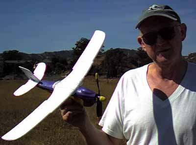

| 
This is of Jerry Long with his Air Hog. A compressed air powered model available at many toy stores, it is a great model with surprisingly good performance, despite not much of a glide. This picture was taken right after the longest flight of the day, a staggering 56 seconds. While this may not seem like much, most flights were right around 30 seconds. Somehow Jerry hooked some good air, and didn't spiral in. I lost both wings due to the dreaded spiral dive DT. |
In the FFML Summer of 1998 Air Hog Postal Contest, this flight ended up second only to Al Lidberg's 59 second flight in an Arizona trash moving thermal. Congrats, Jerry. |
Copyright 1999, Thayer Syme. All rights reserved